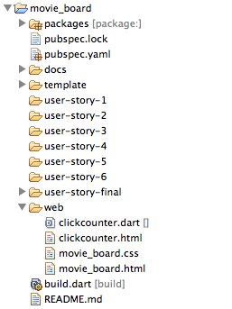
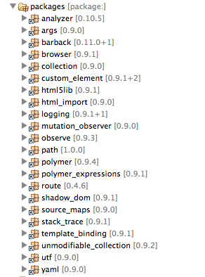

Objectifs :
Objectifs :
- Comprendre la structure principale d'un projet Dart
- Apprendre à créer un composant web avec Polymer
- Effectuer le binding sur un objet métier
- Utiliser Polymer Expressions et les filtres
- Créer sa 1ère closure en Dart
- Comprendre la structure principale d'un projet Dart
- Apprendre à créer un composant web avec Polymer
- Effectuer le binding sur un objet métier - Utiliser Polymer Expressions et les filtres - Créer sa 1ère closure en Dart

Résultat obtenu à la fin de ce chapitre
Commencez par lancer Dart Editor et ouvrez le répertoire movie-board (dans lequel vous avez décompressé l'archive) et explorez la structure du projet (ces éléments sont les éléments standards que vous retrouverez lorsque vous créez une nouvelle application Polymer en partant d'un exemple):

Astuce :
Le répertoiredocscontient les fichiers markdown des user-stories mais aussi la version HTML afin de pouvoir lire les énoncés depuis un navigateur.Lors de l'ouverture du projet, Dart Editor va essayer de compiler ces fichiers HTML et vous générer une erreur. Pour supprimer les erreurs du répertoires
docs, effectuez un clic-droit sur le répertoire puis cliquez sur `Don't analyse'
Ouvrez le fichier pubspec.yaml: il contient les dépendances du projet ainsi que des indications sur comment compiler celui-ci
dependencies:
polymer: any
transformers:
- polymer:
entry_points: web/movie_board.html
movie_board.htmlenindex.htmlpar exemple, pensez bien à modifier votre fichierpubspec.yamlafin de modifier la valeur deentry_pointssinondart2jsne sera pas capable de compiler votre code Dart en Javascript.
build.dart est le script Dart qui est lancé après une sauvegarde et permet d'afficher les warning dans l'éditeur
Dans le répertoire web, les fichiers clickcounter.html et clickcounter.dart représente un composant personnalisé nommé click-counter. Ouvrez ces 2 fichiers.
Nous ne nous servirons pas de ces fichiers mais gardez les à titre d'exemple !
<polymer-element name="click-counter" attributes="count"> (1)
<template>
<!-- Custom element body -->
</template>
<script type="application/dart" src="clickcounter.dart"></script>
</polymer-element>
import 'package:polymer/polymer.dart';
@CustomTag('click-counter') (1)
class ClickCounter extends PolymerElement {
ClickCounter.created() : super.created();
}
clickcounter.html importe clickcounter.dart (à travers le tag script) et ces 2 fichiers forment le composant car ils partagent le même nom : click-counter (1)
xxx-yyy
movie_board.html importe le composant click-counter (1) afin de pouvoir l'utiliser et initialise Dart (2) et Polymer (3)
<head>
<link rel="import" href="clickcounter.html"> (1)
<script type="application/dart">export 'package:polymer/init.dart';</script> (3)
<script src="packages/browser/dart.js"></script> (2)
</head>
<body>
<click-counter count="5"></click-counter>
</body>
Effectuez un clic-droit sur movie_board.html et sélectionnez Run in Dartiumet testez l'application
Le répertoire packagescontient les packages Dart que vous utilisez dans votre projet.

Les autres répertoires (user-story-X, common, docs) sont des répertoires dédiés à faciliter le codelab .
ATTENTION : Votre répertoire de travail est web. Ne regardez pas le contenu des répertoires user-story-xxx !!!
user-story-X. Ces répertoires contiennent le résultat typique que vous devez obtenir à la fin de chaque user story.
Votre répertoire de travail est web, sauf si vous décidez de repartir d'une user-story finalisée. Dans ce cas travaillez directement dans le répertoire adéquat.
Créez un nouveau composant nommé movie-poster
poster.html avec le contenu suivant:<polymer-element name="movie-poster">
<template>
<li class="movie">
<span class="favorite">♥</span>
<section class="overlay">
<h2>Dart Flight School - Montpellier JUG</h2>
<div>Release date: 2014/02/19</div>
<div>Rating: <span class="rating">XXXXXXXXX</span><span>X</span></div>
<div>Voters : 80</div>
</section>
<img src="../common/img/dart-flight-school.jpg">
</li>
</template>
<script type="application/dart" src="poster.dart"></script>
</polymer-element>
poster.dart avec le contenu suivant: library movie.poster;
import 'package:polymer/polymer.dart';
@CustomTag('movie-poster')
class Poster extends PolymerElement {
Poster.created() : super.created();
bool get applyAuthorStyles => true;
}
Remplacez le contenu de movie_board.html par le code suivant :
Importez votre nouveau composant (dans les headers):
<link rel="import" href="poster.html">
Puis modifiez le corps du fichier html :
<body>
<movie-poster></movie-poster>
</body>
Rafraichissez Dartium (vous n'êtes pas obligé de le relancer systématiquement: un simple refresh suffit à le mettre à jour avec vos dernières modifications de code) et vous devriez obtenir ce résultat ! Passez la souris sur l'affiche pour voir les détails du film.
Copiez plusieurs fois le tag du composant dans le fichier movie_board.html et rafraichissez Dartium. Cool non ?
Explications :
- Le nom du composant est défini dans l'attributnamedu PolymerElement du fichier html
- Le fichier html importe un fichier dart grâce au code<script type="application/dart" src="poster.dart"></script>
- Le nom des fichiers n'a aucune importance
- La classe définie dans le fichier dart est relié au composant grâce à l'annotation@CustomTaget doit définir exactement le même nom que celui défini dans l'attributnamedans le fichier html
- La classe dart doit étendrePolymerElement
-PolymerElementse trouve dans le packagepackage:polymer/polymer.dartqu'il faut donc importer
- Le mot clélibrarypermet de définir une librairie dans laquelle plusieurs fichiers peuvent exister. Pour simplifier le codelab, chaque fichier dart définira sa propre librairie avec la convention suivant :library movie.<filename>;
- Afin de simplifier ce codelab, les styles CSS ont été défini de façon globale. Pour pouvoir appliquer les styles globaux sur un composant, il faut surcharger le getterapplyAuthorStyleset renvoyertrue
- Tous composants polymer doit surcharger le constructeurcreatedet appeler le constructeur hérité
Bravo ! Vous venez de réaliser votre 1er composant
Créez le fichier models.dart et ajoutez la définition de la librairie library movie.models;
Dans ce fichier créez la classe Movie avec le code suivant :
library movie.models;
class Movie {
int id;
String title;
String posterPath;
String releasedDate;
int voteAverage;
int voteCount;
bool favorite;
String tag;
Movie.sample() {
id = ...;
title = .....;
posterPath = ...;
releasedDate= ...;
voteAverage = ...;
voteCount = ...;
tag = ...;
}
}
Initialisez les valeurs des attributs avec des valeurs de votre choix. Pour posterPath vous pouvez utiliser une des images du répertoire .../common/json/images/posters/ (Utilisez clic-droit rename pour copier le nom du fichier mais ne renommez pas ce dernier)
Note importante :
- Cette classe représente le modèle métier qui sera utilisé pour afficher un film
- En dart on ne peut pas faire (comme en java) plusieurs constructeurs avec différents paramètres
- Pour gérer ce cas de figure, dart a introduit les constructeurs nommés
- Un constructeur nommé s'écrit de la façon suivante<nom de la class>.<nom du constructeur>
-Movie.sample()est un constructeur nommé
- On peut l'appeler par le code suivant :Movie m = new Movie.sample();
@observabletree shaking Dart2JS supprime tous les élements / attributs non utilisés par votre code. Or les attributs utilisés dans des Polymer Expressions ne sont pas (actuellement) pris en compte dans l'évaluation du tree shaking. Vous devez donc indiquer à Dart2JS qu'il ne faut pas supprimer vos attributs. Pour cela il suffit soit de rajouter l'annotation @observable devant un attribut, soit ajouter l'annotation @reflectable (accessible par réflexion : appelé Mirror en Dart).Pour que ce code fonctionne aussi en javascript, modifiez le code de la façon suivante :
import 'package:polymer/polymer.dart';@reflectable devant chaque attributDans le fichier poster.dart, ajoutez la déclaration et l'initiation d'un attribut dans la classe Poster :
@observable Movie movie = new Movie.sample();
Ne pas oublier de placer import 'models.dart'; au début de ce fichier.
- C'est à travers cet attribut que les différents valeurs du film seront affichées
- Cet attribut doit aussi avoir l'annotation@observablepour les mêmes raisons que précédemment
Dans le fichier poster.html, remplacez le titre du film <h2>Dart Flight School - Montpellier JUG</h2> par une expression Polymer <h2>{{movie.title}}</h2>
Rafrachissez Dartium pour vérifier que le titre provient bien de la propriété title du film.
- Une expression Polymer s'écrit de la façon suivante :{{ <expression> }}
- Dans une expression polymer vous pouvez utilisez tous les attributs défini dans la classe dart associée au composant
Dans le fichier poster.html, remplacez les valeurs statiques restantes avec des expressions Polymer en utilisant les différents attributs définis dans la classe Movie (laissez de coté le vote moyen pour l'instant).
Pour afficher le vote moyen sous forme d'étoile, vous allez utiliser un filtre. Un filtre est une fonction qui possède un seul paramètre (la valeur) et retourne une autre valeur (qui peut être d'un autre type). Son utilisation est la suivante :
{{ movie.voteAverage | asStars }}
Voir les Polymer Expressions
Ici le vote moyen (de type int) est passé en paramètre de la fonction asStars.
Ajoutez une méthode à la classe Poster qui prenne en paramètre un int et qui retourne une chaine. Utilisez les méthodes List.generateet List.join pour créer votre chaîne en utilisant le caractère étoile : \u2605
Documentation de l'API List
asStars(int nb) {
// Ici votre code pour générer le bon nombre d'étoiles
return xxxxx;
}
Cette fonction peut s'écrire sur une seule ligne...
- Lors de l'évaluation de l'expression polymer, la valeur demovie.voteAverageest passée au filtreasStars(qui donc doit avoir comme paramètre unint). Cette méthode génère une chaine et la retourne. C'est la valeur retournée qui sera affichée.
 Vous êtes en avance sur le timing : voici un bonus !
Vous êtes en avance sur le timing : voici un bonus !Le vote moyen étant sur 10, utilisez les techniques vues précédemment afin de faire un complément à 10 et affichez le nombre d'étoiles manquantes pour avoir la note maximum dans le 2ème tag <span>.
Pour mettre un peu de piment, essayez ensuite de ne pas faire une fonction figée qui fasse toujours le complément à 10 ! Essayez plutôt d'utiliser une closure afin de rendre paramétrable la valeur du complement.
Dernier conseil, il est possible d'empiler les filtres les uns derrière les autres de la façon suivante : {{ value | filter1 | filter 2 | filter n }}
Voir 'Dart - Functions are fun' et cherchez sur cette page la fonction makeAdder pour un exemple sur les closures en Dart.
Si votre composant n'affiche rien, vérifiez que les fichiers utilisent le même nom de composant et vérifiez que votre fichier dart est bien importé dans le fichier HTML (sinon vous aurez une belle page vide)
Pour pouvoir utiliser un composant dans une page HTML ou dans un autre composant, vous devez importer le fichier HTML de ce composant :
<link rel="import" href="poster.html">
- Pour appliquer les styles définis au niveau document sur contenu d'un composant, vous devez ajouter le getter suivant à votre classe Dart (par défaut seuls les styles définis dans le composant sont appliqués à son contenu):
bool get applyAuthorStyles => true;
Si une classe est indiquée comme non définie, cela signifie que vous le l'avez pas importée :
import <fichier dart>;Pour utiliser les classes définies dans Polymer vous devez effectuer un import
import 'package:polymer/polymer.dart';
Tous les fichiers Dart se trouve dans une librairie et sans définition ils se trouvent dans la librairie par défaut. Dart Editor vous affichera un warning si vous essayez, depuis un même fichier, d'importer 2 fichiers se trouvant dans la même librairie. Pour éviter ce warning, vous devez ajouter une entête dans chaque fichier Dart définissant le nom de la librairie:
library <nom de la librairie>; // Par exemple library movie.models;